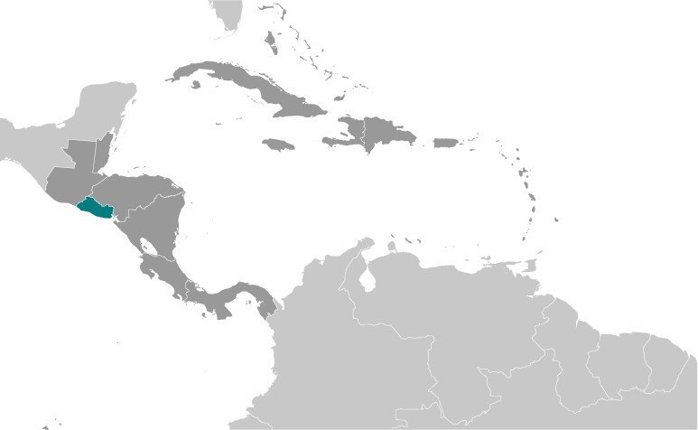
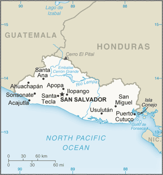
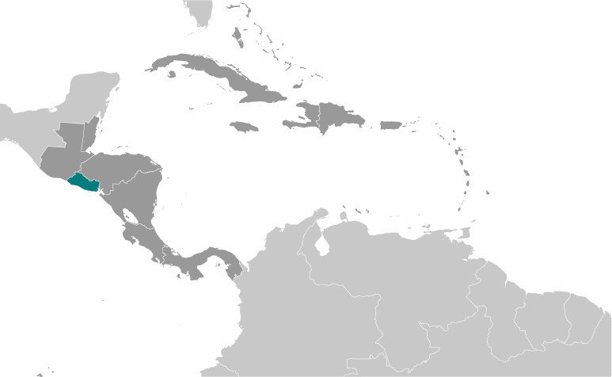
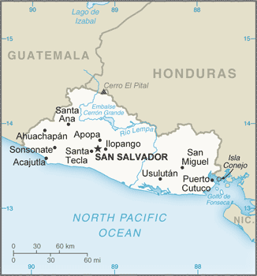

Central America and Caribbean :: EL SALVADOR
Introduction :: EL SALVADOR
-
El Salvador achieved independence from Spain in 1821 and from the Central American Federation in 1839. A 12-year civil war, which cost about 75,000 lives, was brought to a close in 1992 when the government and leftist rebels signed a treaty that provided for military and political reforms. El Salvador is beset by one of the world’s highest homicide rates and pervasive criminal gangs.
Geography :: EL SALVADOR
-
Central America, bordering the North Pacific Ocean, between Guatemala and Honduras13 50 N, 88 55 WCentral America and the Caribbeantotal: 21,041 sq kmland: 20,721 sq kmwater: 320 sq kmcountry comparison to the world: 153about the same size as New Jerseytotal: 590 kmborder countries (2): Guatemala 199 km, Honduras 391 km307 kmterritorial sea: 12 nmcontiguous zone: 24 nmexclusive economic zone: 200 nmtropical; rainy season (May to October); dry season (November to April); tropical on coast; temperate in uplandsmostly mountains with narrow coastal belt and central plateaumean elevation: 442 melevation extremes: lowest point: Pacific Ocean 0 mhighest point: Cerro El Pital 2,730 mhydropower, geothermal power, petroleum, arable landagricultural land: 74.7%arable land 33.1%; permanent crops 10.9%; permanent pasture 30.7%forest: 13.6%other: 11.7% (2011 est.)452 sq km (2012)known as the Land of Volcanoes; frequent and sometimes destructive earthquakes and volcanic activity; extremely susceptible to hurricanesvolcanism: significant volcanic activity; San Salvador (1,893 m), which last erupted in 1917, has the potential to cause major harm to the country's capital, which lies just below the volcano's slopes; San Miguel (2,130 m), which last erupted in 2002, is one of the most active volcanoes in the country; other historically active volcanoes include Conchaguita, Ilopango, Izalco, and Santa Anadeforestation; soil erosion; water pollution; contamination of soils from disposal of toxic wastesparty to: Biodiversity, Climate Change, Climate Change-Kyoto Protocol, Desertification, Endangered Species, Hazardous Wastes, Ozone Layer Protection, Wetlandssigned, but not ratified: Law of the Seasmallest Central American country and only one without a coastline on the Caribbean Sea
People and Society :: EL SALVADOR
-
6,172,011 (July 2017 est.)country comparison to the world: 108noun: Salvadoran(s)adjective: Salvadoranmestizo 86.3%, white 12.7%, Amerindian 0.2% (includes Lenca, Kakawira, Nahua-Pipil), black 0.1%, other 0.6% (2007 est.)Spanish (official), Nawat (among some Amerindians)Roman Catholic 50%, Protestant 36%, other 2%, none 12% (2014 est.)El Salvador is the smallest and most densely populated country in Central America. It is well into its demographic transition, experiencing slower population growth, a decline in its number of youths, and the gradual aging of its population. The increased use of family planning has substantially lowered El Salvador's fertility rate, from approximately 6 children per woman in the 1970s to replacement level today. A 2008 national family planning survey showed that female sterilization remained the most common contraception method in El Salvador - its sterilization rate is among the highest in Latin America and the Caribbean - but that the use of injectable contraceptives is growing. Fertility differences between rich and poor and urban and rural women are narrowing.Salvadorans fled during the 1979 to 1992 civil war mainly to the United States but also to Canada and to neighboring Mexico, Guatemala, Honduras, Nicaragua, and Costa Rica. Emigration to the United States increased again in the 1990s and 2000s as a result of deteriorating economic conditions, natural disasters (Hurricane Mitch in 1998 and earthquakes in 2001), and family reunification. At least 20% of El Salvador's population lives abroad. The remittances they send home account for close to 20% of GDP, are the second largest source of external income after exports, and have helped reduce poverty.0-14 years: 25.92% (male 820,255/female 779,306)15-24 years: 20.23% (male 628,535/female 620,230)25-54 years: 39.23% (male 1,120,705/female 1,300,771)55-64 years: 7.14% (male 194,360/female 246,164)65 years and over: 7.48% (male 203,320/female 258,365) (2017 est.)total dependency ratio: 56.8youth dependency ratio: 44.4elderly dependency ratio: 12.4potential support ratio: 8 (2015 est.)total: 27.1 yearsmale: 25.6 yearsfemale: 28.6 years (2017 est.)country comparison to the world: 1460.25% (2017 est.)country comparison to the world: 17716.2 births/1,000 population (2017 est.)country comparison to the world: 1125.8 deaths/1,000 population (2017 est.)country comparison to the world: 173-8 migrant(s)/1,000 population (2017 est.)country comparison to the world: 206athough it is the smallest country in land area in Central America, El Salvador has a population that is 18 times larger than Belize; at least 20% of the population lives abroad; high population density country-wide, with particular concentration around the capital of San Salvadorurban population: 67.6% of total population (2017)rate of urbanization: 1.23% annual rate of change (2015-20 est.)SAN SALVADOR (capital) 1.098 million (2015)at birth: 1.05 male(s)/female0-14 years: 1.05 male(s)/female15-24 years: 1.01 male(s)/female25-54 years: 0.86 male(s)/female55-64 years: 0.8 male(s)/female65 years and over: 0.8 male(s)/femaletotal population: 0.93 male(s)/female (2016 est.)20.8 yearsnote: median age at first birth among women 25-29 (2008 est.)54 deaths/100,000 live births (2015 est.)country comparison to the world: 92total: 16.8 deaths/1,000 live birthsmale: 18.8 deaths/1,000 live birthsfemale: 14.6 deaths/1,000 live births (2017 est.)country comparison to the world: 96total population: 74.9 yearsmale: 71.6 yearsfemale: 78.3 years (2017 est.)country comparison to the world: 1151.87 children born/woman (2017 est.)country comparison to the world: 14472% (2014)6.8% of GDP (2014)country comparison to the world: 861.92 physicians/1,000 population (2008)1.1 beds/1,000 population (2012)improved:urban: 97.5% of populationrural: 86.5% of populationtotal: 93.8% of populationunimproved:urban: 2.5% of populationrural: 13.5% of populationtotal: 6.2% of population (2015 est.)improved:urban: 82.4% of populationrural: 60% of populationtotal: 75% of populationunimproved:urban: 17.6% of populationrural: 40% of populationtotal: 25% of population (2015 est.)0.6% (2016 est.)country comparison to the world: 5824,000 (2016 est.)country comparison to the world: 71<1000 (2016 est.)degree of risk: highfood or waterborne diseases: bacterial and protozoal diarrheavectorborne diseases: dengue fevernote: active local transmission of Zika virus by Aedes species mosquitoes has been identified in this country (as of August 2016); it poses an important risk (a large number of cases possible) among US citizens if bitten by an infective mosquito; other less common ways to get Zika are through sex, via blood transfusion, or during pregnancy, in which the pregnant woman passes Zika virus to her fetus (2016)24.6% (2016)country comparison to the world: 575% (2014)country comparison to the world: 783.4% of GDP (2014)country comparison to the world: 129definition: age 15 and over can read and writetotal population: 88%male: 90%female: 86.2% (2015 est.)total: 13 yearsmale: 13 yearsfemale: 13 years (2014)total: 12.4%male: 11.8%female: 13.6% (2013 est.)country comparison to the world: 89
Government :: EL SALVADOR
-
conventional long form: Republic of El Salvadorconventional short form: El Salvadorlocal long form: Republica de El Salvadorlocal short form: El Salvadoretymology: name is an abbreviation of the original Spanish conquistador designation for the area "Provincia de Nuestro Senor Jesus Cristo, el Salvador del Mundo" (Province of Our Lord Jesus Christ, the Saviour of the World), which became simply "El Salvador" (The Savior)presidential republicname: San Salvadorgeographic coordinates: 13 42 N, 89 12 Wtime difference: UTC-6 (1 hour behind Washington, DC, during Standard Time)14 departments (departamentos, singular - departamento); Ahuachapan, Cabanas, Chalatenango, Cuscatlan, La Libertad, La Paz, La Union, Morazan, San Miguel, San Salvador, San Vicente, Santa Ana, Sonsonate, Usulutan15 September 1821 (from Spain)Independence Day, 15 September (1821)many previous; latest drafted 16 December 1983, enacted 23 December 1983; amended many times, last in 2014 (2016)civil law system with minor common law influence; judicial review of legislative acts in the Supreme Courthas not submitted an ICJ jurisdiction declaration; non-party state to the ICCtcitizenship by birth: yescitizenship by descent: yesdual citizenship recognized: yesresidency requirement for naturalization: 5 years18 years of age; universalchief of state: President Salvador SANCHEZ CEREN (since 1 June 2014); Vice President Salvador Oscar ORTIZ (since 1 June 2014); note - the president is both chief of state and head of governmenthead of government: President Salvador SANCHEZ CEREN (since 1 June 2014); Vice President Salvador Oscar ORTIZ (since 1 June 2014)cabinet: Council of Ministers selected by the presidentelections/appointments: president and vice president directly elected on the same ballot by absolute majority popular vote in 2 rounds if needed for a single 5-year term; election last held on 2 February 2014 with a runoff on 9 March 2014 (next to be held in early 2019)election results: percent of vote in first round - Salvador SANCHEZ CEREN (FMLN) 48.9%, Norman QUIJANO (ARENA) 39%, Antonio SACA (CN) 11.4%, other 0.7%; Salvador SANCHEZ CEREN elected president in second round - Salvador SANCHEZ CEREN 50.1%, Norman QUIJANO 49.9%description: unicameral Legislative Assembly or Asamblea Legislativa (84 seats; members directly elected in multi-seat constituencies and a single nationwide constituency by proportional representation vote to serve 3-year terms)elections: last held on 1 March 2015 (next to be held in March 2018)election results: percent of vote by party - ARENA 38.8%, FMLN 37.3%, GANA 9.3%, PCN 6.8%, PDC 2.5%, other 5.2%; seats by party - ARENA 32, FMLN 31, GANA 11, PCN 4, ARENA-PCN 3, PCN-DS 1, PCN-PDC 1, PDC 1highest court(s): Supreme Court or Corte Suprema de Justicia (consists of 15 judges assigned to constitutional, civil, penal, and administrative conflict divisions)judge selection and term of office: judges elected by the Legislative Assembly on the recommendation of both the National Council of the Judicature, an independent body elected by the Legislative Assembly and the Bar Association; judges elected for 9-year terms, with renewal of one-third of membership every 3 years; consecutive reelection is allowedsubordinate courts: Appellate Courts; Courts of First Instance; Courts of PeaceChristian Democratic Party or PDC [Rodolfo Antonio PARKER Soto]Democratic Change (Cambio Democratico) or CD [Douglas AVILES] (formerly United Democratic Center or CDU)Farabundo Marti National Liberation Front or FMLN [Medardo GONZALEZ]Great Alliance for National Unity or GANA [Jose Andres ROVIRA Caneles]National Coalition Party or PCN [Manuel RODRIGUEZ]Nationalist Republican Alliance or ARENA [Mauricio INTERIANO]labor organizations:Electrical Industry Union of El Salvador or SIESFederation of the Construction Industry, Similar Transport, and other activities or FESINCONTRANSNational Confederation of Salvadoran Workers or CNTSNational Trade Union Federation of Salvadoran Workers or FENASTRASNational Union of Salvadoran Workers or UNTSPort Industry Union of El Salvador or SIPESSalvadoran Workers Central or CTSUnion of Judiciary Workers or SITTOJUnion of Workers of the Ministry of the Treasury or SITRAMIWorkers Union of Electrical Corporation or STCELbusiness organizations:American Chamber of Commerce in El SalvadorNational Association of Private Enterprise or ANEPSalvadoran Chamber of Commerce or SACOCSalvadoran Chamber of the Construction Industry or CASALCOSalvadoran Industrial Association or ASIBCIE, CACM, CD, CELAC, FAO, G-11, G-77, IADB, IAEA, IBRD, ICAO, ICC (national committees), ICRM, IDA, IFAD, IFC, IFRCS, ILO, IMF, IMO, Interpol, IOC, IOM, IPU, ISO (correspondent), ITSO, ITU, ITUC (NGOs), LAES, LAIA (observer), MIGA, MINURSO, MINUSTAH, NAM (observer), OAS, OPANAL, OPCW, Pacific Alliance (observer), PCA, Petrocaribe, SICA, UN, UNCTAD, UNESCO, UNIDO, UNIFIL, Union Latina, UNISFA, UNMISS, UNOCI, UNWTO, UPU, WCO, WFTU (NGOs), WHO, WIPO, WMO, WTOchief of mission: Ambassador Claudia Ivette CANJURA de Centeno (since 17 June 2016)chancery: 1400 16th Street NW, Suite 100, Washington, DC 20036telephone: [1] (202) 595-7517FAX: [1] (202) 232-1928consulate(s) general: Atlanta, Boston, Brentwood (NY), Chicago, Coral Gables (FL), Dallas, Houston, Las Vegas (NV), Los Angeles, McAllen (TX), New York, Nogales (AZ), San Francisco, Seattle, Tucson (AZ), Washington, DC, Woodbridge (VA), Woodstock (GA)consulate(s): Elizabeth (NJ), Newark (NJ)chief of mission: Ambassador Jean Elizabeth MANES (since 29 March 2016)embassy: Final Boulevard Santa Elena Sur, Antiguo Cuscatlan, La Libertad, San Salvadormailing address: Unit 3450, APO AA 34023; 3450 San Salvador Place, Washington, DC 20521-3450telephone: [503] 2501-2999FAX: [503] 2501-2150three equal horizontal bands of cobalt blue (top), white, and cobalt blue with the national coat of arms centered in the white band; the coat of arms features a round emblem encircled by the words REPUBLICA DE EL SALVADOR EN LA AMERICA CENTRAL; the banner is based on the former blue-white-blue flag of the Federal Republic of Central America; the blue bands symbolize the Pacific Ocean and the Caribbean Sea, while the white band represents the land between the two bodies of water, as well as peace and prosperitynote: similar to the flag of Nicaragua, which has a different coat of arms centered in the white band; also similar to the flag of Honduras, which has five blue stars arranged in an X pattern centered in the white bandturquoise-browed motmot (bird); national colors: blue, whitename: "Himno Nacional de El Salvador" (National Anthem of El Salvador)lyrics/music: Juan Jose CANAS/Juan ABERLEnote: officially adopted 1953, in use since 1879; at 4:20 minutes the anthem of El Salvador is one of the world's longest
Economy :: EL SALVADOR
-
The smallest country in Central America geographically, El Salvador has the fourth largest economy in the region. With the global recession, real GDP contracted in 2009 and economic growth has since remained low, averaging less than 2% from 2010 to 2014, but recovered somewhat in 2015-16 with an average annual growth rate of 2.4%. Remittances accounted for approximately 17.1% of GDP in 2016 and were received by about a third of all households.In 2006, El Salvador was the first country to ratify the Dominican Republic-Central American Free Trade Agreement, which has bolstered the export of processed foods, sugar, and ethanol, and supported investment in the apparel sector amid increased Asian competition. In September 2015, El Salvador kicked off a five-year $277 million second compact with the Millennium Challenge Corporation - a US Government agency aimed at stimulating economic growth and reducing poverty - to improve El Salvador's competitiveness and productivity in international markets.The Salvadoran Government maintained fiscal discipline during post-war reconstruction and rebuilding following earthquakes in 2001 and hurricanes in 1998 and 2005, but El Salvador's public debt, estimated at 61.1% of GDP in 2016, has been growing over the last several years. Total external debt was nearly 60% of GDP in 2016.$54.67 billion (2016 est.)$52.73 billion (2015 est.)$51 billion (2014 est.)note: data are in 2016 dollarscountry comparison to the world: 108$26.8 billion (2016 est.)2.4% (2016 est.)2.3% (2015 est.)1.4% (2014 est.)country comparison to the world: 120$8,600 (2016 est.)$8,500 (2015 est.)$8,300 (2014 est.)note: data are in 2016 dollarscountry comparison to the world: 14311.7% of GDP (2016 est.)10.3% of GDP (2015 est.)8.8% of GDP (2014 est.)country comparison to the world: 149household consumption: 88.8%government consumption: 12.1%investment in fixed capital: 13.6%investment in inventories: 0%exports of goods and services: 24.9%imports of goods and services: -39.3% (2016 est.)agriculture: 10.6%industry: 24.6%services: 64.8% (2016 est.)coffee, sugar, corn, rice, beans, oilseed, cotton, sorghum; beef, dairy productsfood processing, beverages, petroleum, chemicals, fertilizer, textiles, furniture, light metals2.2% (2016 est.)country comparison to the world: 1022.76 million (2016 est.)country comparison to the world: 109agriculture: 21%industry: 20%services: 58% (2011 est.)7% (2016 est.)5.6% (2015 est.)note: data are official rates; but underemployment is highcountry comparison to the world: 7334.9% (2015 est.)lowest 10%: 2.2%highest 10%: 32.3% (2014 est.)37 (2015 est.)38 (2014)country comparison to the world: 79revenues: $5.525 billionexpenditures: $6.276 billion (2016 est.)20.7% of GDP (2016 est.)country comparison to the world: 146-2.8% of GDP (2016 est.)country comparison to the world: 11265.5% of GDP (2016 est.)63.7% of GDP (2015 est.)note: El Salvador's total public debt includes non-financial public sector debt, financial public sector debt, and central bank debtcountry comparison to the world: 58calendar year0.6% (2016 est.)-0.9% (2015 est.)country comparison to the world: 676.37% (31 December 2016 est.)6.17% (31 December 2015 est.)country comparison to the world: 120$3.129 billion (31 December 2016 est.)$3.253 billion (31 December 2015 est.)country comparison to the world: 116$11.97 billion (31 December 2016 est.)$11.61 billion (31 December 2015 est.)country comparison to the world: 102$13.71 billion (31 December 2016 est.)$13.28 billion (31 December 2015 est.)country comparison to the world: 97$4.4 billion (December 2016 est.)$3.816 billion (December 2015 est.)$3.535 billion (December 2014 est.)country comparison to the world: 91$-531 million (2016 est.)$-926.1 million (2015 est.)country comparison to the world: 100$4.186 billion (2016 est.)$4.381 billion (2015 est.)country comparison to the world: 111offshore assembly exports, coffee, sugar, textiles and apparel, ethanol, chemicals, electricity, iron and steel manufacturesUS 48.3%, Honduras 14.2%, Guatemala 13.5%, Nicaragua 6.5%, Costa Rica 4.7% (2016)$8.823 billion (2016 est.)$9.384 billion (2015 est.)country comparison to the world: 99raw materials, consumer goods, capital goods, fuels, foodstuffs, petroleum, electricityUS 37.9%, Guatemala 10.2%, China 8.8%, Mexico 7.6%, Honduras 6.3% (2016)$3.238 billion (31 December 2016 est.)$2.787 billion (31 December 2015 est.)country comparison to the world: 103$15.2 billion (31 December 2016 est.)$15.03 billion (31 December 2015 est.)country comparison to the world: 100$10.31 billion (31 December 2016 est.)$10.03 billion (31 December 2015 est.)country comparison to the world: 95$1.111 billion (31 December 2016 est.)$1.026 billion (31 December 2015 est.)country comparison to the world: 85note: the US dollar is used as a medium of exchange and circulates freely in the economy
Energy :: EL SALVADOR
-
population without electricity: 400,000electrification - total population: 94%electrification - urban areas: 98%electrification - rural areas: 86% (2013)5.482 billion kWh (2016 est.)country comparison to the world: 1186.351 billion kWh (2016)country comparison to the world: 11374.3 million kWh (2016 est.)country comparison to the world: 821.066 billion kWh (2016 est.)country comparison to the world: 671.792 million kW (2016 est.)country comparison to the world: 11651.6% of total installed capacity (2015 est.)country comparison to the world: 1480% of total installed capacity (2015 est.)country comparison to the world: 8725.6% of total installed capacity (2015 est.)country comparison to the world: 7825.7% of total installed capacity (2015 est.)country comparison to the world: 200 bbl/day (2016 est.)country comparison to the world: 132220 bbl/day (2014 est.)country comparison to the world: 790 bbl/day (2014 est.)country comparison to the world: 1240 bbl (1 January 2017 es)country comparison to the world: 1320 bbl/day (2014 est.)country comparison to the world: 14046,000 bbl/day (2015 est.)country comparison to the world: 107224.8 bbl/day (2014 est.)country comparison to the world: 12045,540 bbl/day (2014 est.)country comparison to the world: 870 cu m (2016 est.)country comparison to the world: 1320 cu m (2016 est.)country comparison to the world: 1780 cu m (2016 est.)country comparison to the world: 1000 cu m (2016 est.)country comparison to the world: 1220 cu m (1 January 2016 es)country comparison to the world: 1374.318 million Mt (2015 est.)country comparison to the world: 129
Communications :: EL SALVADOR
-
total subscriptions: 933,377subscriptions per 100 inhabitants: 15 (July 2016 est.)country comparison to the world: 79total: 9,101,868subscriptions per 100 inhabitants: 148 (July 2016 est.)country comparison to the world: 90general assessment: multiple mobile-cellular began rolling out Long Term Evolution (LTE) data services in late-2016; growth in fixed-line services has slowed in the face of mobile-cellular competition; Internet usage grew almost 400% between 2007 and 2015domestic: nationwide microwave radio relay systeminternational: country code - 503; satellite earth station - 1 Intelsat (Atlantic Ocean); connected to Central American Microwave System (2017)multiple privately owned national terrestrial TV networks, supplemented by cable TV networks that carry international channels; hundreds of commercial radio broadcast stations and 1 government-owned radio broadcast station; transition to digital transmission to begin in 2018 along with adaptation of the Japanese-Brazilian Digital Standard (ISDB-T) (2017).svtotal: 1,785,254percent of population: 29.0% (July 2016 est.)country comparison to the world: 102
Transportation :: EL SALVADOR
-
number of registered air carriers: 2inventory of registered aircraft operated by air carriers: 36annual passenger traffic on registered air carriers: 2,597,649annual freight traffic on registered air carriers: 13,873,884 mt-km (2015)YS (2016)68 (2013)country comparison to the world: 74total: 5over 3,047 m: 11,524 to 2,437 m: 1914 to 1,523 m: 2under 914 m: 1 (2017)total: 631,524 to 2,437 m: 1914 to 1,523 m: 11under 914 m: 51 (2013)2 (2013)total: 12.5 kmnarrow gauge: 12.5 km 0.914-m gauge (2014)country comparison to the world: 135total: 6,979 kmpaved: 4,414 km (includes 341 km of expressways)unpaved: 2,565 km (2016)country comparison to the world: 147(Rio Lempa River is partially navigable by small craft) (2011)major seaport(s): Puerto Cutucooil terminal(s): Acajutla offshore terminal
Military and Security :: EL SALVADOR
-
0.87% of GDP (2016)0.95% of GDP (2015)0.93% of GDP (2014)0.98% of GDP (2013)0.94% of GDP (2012)country comparison to the world: 101Salvadoran Armed Forces (Fuerza Armada de El Salvador, FAES): Salvadoran Army (Ejercito de El Salvador, ES), Salvadoran Navy (Fuerza Naval de El Salvador, FNES), Salvadoran Air Force (Fuerza Aerea Salvadorena, FAS) (2017)18 years of age for selective compulsory military service; 16-22 years of age for voluntary male or female service; service obligation is 12 months, with 11 months for officers and NCOs (2012)
Transnational Issues :: EL SALVADOR
-
International Court of Justice (ICJ) ruled on the delimitation of "bolsones" (disputed areas) along the El Salvador-Honduras boundary, in 1992, with final agreement by the parties in 2006 after an Organization of American States survey and a further ICJ ruling in 2003; the 1992 ICJ ruling advised a tripartite resolution to a maritime boundary in the Gulf of Fonseca advocating Honduran access to the Pacific; El Salvador continues to claim tiny Conejo Island, not identified in the ICJ decision, off Honduras in the Gulf of FonsecaIDPs: 220,000 (2016)transshipment point for cocaine; small amounts of marijuana produced for local consumption; significant use of cocaine